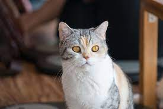

|  |
| American Wirehair |
BEHAVIOR
Known for being a little reserved initially, once they get to know you the American Wirehair is extremely affectionate and friendly.
Because of this tendency towards reticency, making sure they have been well socialized as kittens is important.
Once they settle into a new home, they tend to be resilient, have very affable natures and can be doughy, warm-hearted clowns.
The American Wirehair is not a breed that will be content with just lying around on your lap all day. While they do enjoy receiving affection, they are also an agile and energetic breed. They will need plenty of exercise and enrichment to keep them from becoming bored.
If you are out most of the day, then the American Wirehair is not the best breed to choose. They enjoy being surrounded by company. They often get on well with respectful children and even family dogs too, providing they are introduced carefully.
GROOMING
American Wirehairs have wide-set eyes, tapered tails, and—most distinctively—a steel wool-like coat that sets her apart from other breeds. While less brushing or combing is better for this cat, she might benefit from regular baths to lessen her coat’s oily feel and slough off dead hair.
HEALTH PROBLEMS
The American Wirehair is widely regarded as one of the healthiest breeds out there. They have been subject to a very rigorous and reputable breeding program, and they are generally considered a hardy breed.
They often live very long and healthy lives and, at present, there are no inheritable conditions they are known to suffer from.
Because of the coarse nature of their coat, care should always be taken when bathing or grooming. The hairs can be more prone to breaking more easily than on other breeds.
They can sometimes also suffer from a greater build-up of wax if they have the coarse hairs inside their ear. You should regularly inspect them and use a very gentle cleanser if you do spot any issues.
NUTRITION
Like any cat, your American Wirehair should be fed a high-quality diet. Cats are obligate carnivores and, as such, they need a high protein diet with a careful balance of vitamins and minerals.